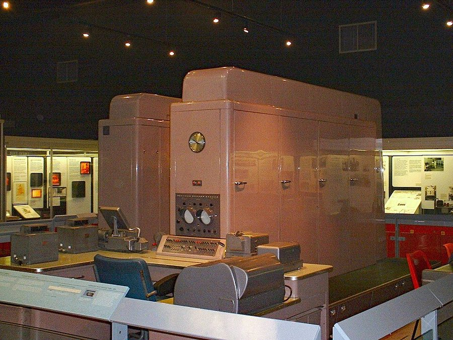
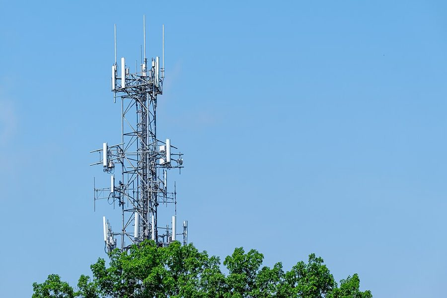
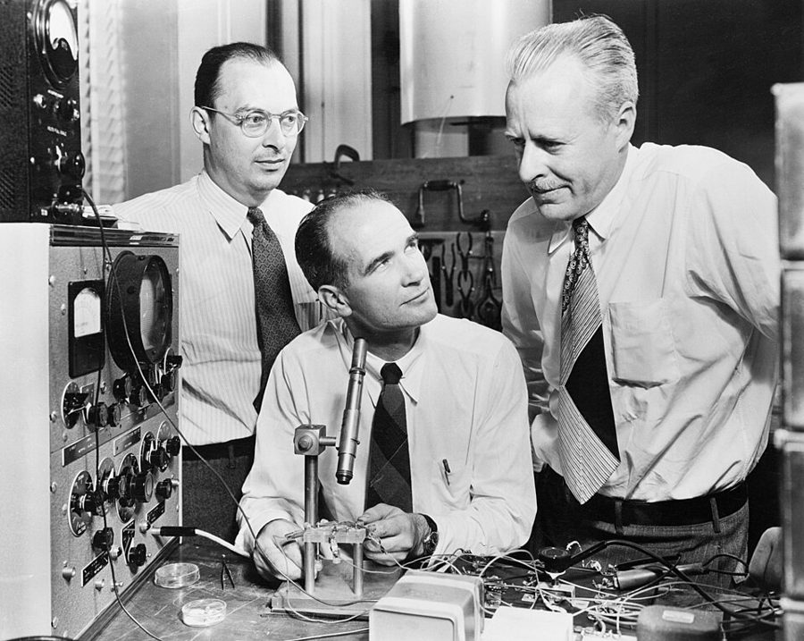
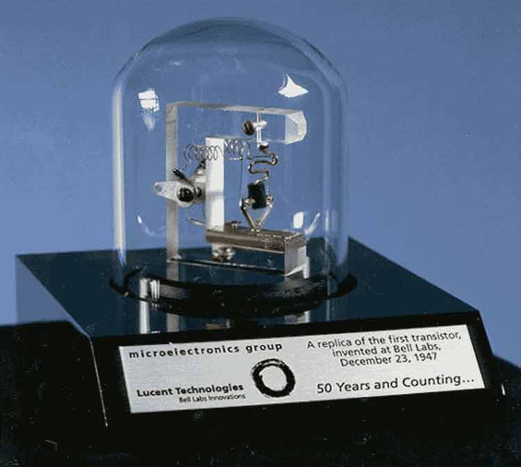
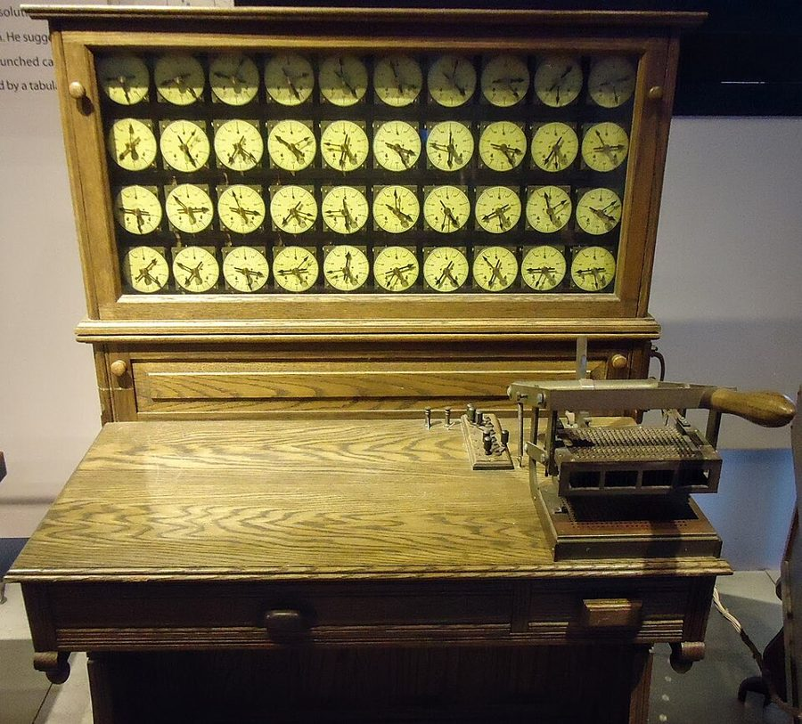
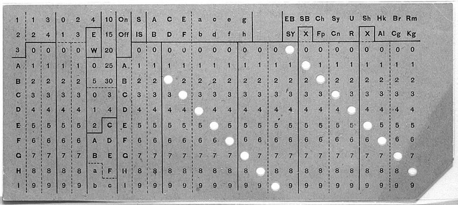

show no sign of abating
… and shows no sign of abating …
没有减弱的迹象
abate 是减弱、平息，新闻里常说风暴、疫情 abate。
第 5 章是作者五个「时代」里的第四个：信息的时代，副标题是「变小」。他念大学时一屋子电子管的计算机，算力还不如今天外衣口袋里的手机。他先讲手机怎样接通：城市切成小区，同一批频率反复用。再讲晶体管怎样用小电压管住大电流，花三段拆开一只双极管。后半章从「只认两种状态」讲到逻辑门和触发器计数，两次说功能是从连接方式里「涌现」的，给第 6 章埋伏笔。最后望向云计算、量子计算和纳米医学。

第 4 章讲电磁的时代：发电、送电，再到无线电，最后讲到电子管能放大信号、载波能驮着声音走。这一章接着往下：作者把信息革命的种子放在 20 世纪初用电磁学的新发现传信息，把真正的起点放在晶体管。读法和前几章不同，这一章的东西程序员天天在用，难的是硬件那一面。下一章是最后一个时代，系统；这一章两次出现的「涌现」，到那里才展开。
别被带歪：§1 讲手机怎么接通，用的是第一代模拟手机的做法，一个电话占一对频率；今天的 4G、5G 不这样分频率。§3 细讲的双极晶体管，也不是今天 CPU 里成亿个的那种（场效应管）。小区、复用、「小电压管大电流」这些道理没变。
一座城市只分到几百对频率，几百万部手机怎么同时打电话？
读的时候带着这几个问题，读完回来对照「检查一下理解」。
原书这一章没有小标题，一口气写下来。下面的节是本站按段落分的：粗体是本站起的节名，后面是档和英文词数；再下面是这一节开头的几个英文词，在 Kindle 里搜它就能跳过去。读完打个勾。
先把这一页用到的几个概念用书外的例子讲一遍。作者拿它们推出什么，读原书时自己看。后面各页用到时会链回这里。
一家运营商能用的无线电频率是管理部门分给它的，数量有限。第一代手机里一个电话要占一对频率，一个发、一个收，几百对频率只够几百个人同时打。办法是复用：手机发射功率小，信号出不了一个小区，隔开一段的小区就能用同一批频率。相邻小区不能同频，常见的做法是七个小区一组，一组把全部频率分完。小区切得越小，同一批频率在城里用的遍数越多。
边打电话边走进隔壁小区，网络让手机换用那里的频率，这叫切换（handoff）。今天的 4G、5G 不再一个电话占一对频率：一段宽频带切成许多窄的小块，按需分给各个用户，相邻小区也常用同一段频带。
在这一页：§1 用两段讲手机怎样接通。「动手：模拟器」里可以调小区大小和分组。
纯硅导电很差。掺进一点磷，多出能自由跑的电子，叫 n 型；掺进一点硼，留下一个个缺电子的位置，叫空穴，它像正电荷一样会挪动，叫 p 型。这叫掺杂（doping）。双极晶体管是 n、p、n 三层夹心：电子从发射极出发，穿过极薄的 p 型基区，大部分被集电极那边的电压扫过去。基极和发射极之间零点几伏的电压决定能过去多少，就像电子管里栅极上的小电压管住大电流。
集电极电流和基极电流之比叫放大倍数，书里说从 10 到 1,000。书里为了好懂说电流随电压「成比例」变，严格说是指数关系：电压每多约 0.06 伏，电流涨十倍。所以它特别适合当开关。
在这一页：§2 讲它能做什么，§3 拆开讲里面；§5 说单个晶体管就能做成非门。
集成电路是在一片硅晶圆上，用照相和化学的办法同时做出成千上万个晶体管和它们之间的连线，再切成一块块芯片。不用一个个焊，便宜，也比焊点多的电路可靠。
摩尔定律不是物理定律，是 Gordon Moore 对这一行的观察：芯片上的晶体管数每两年左右翻一番。1971 年 Intel 的第一块微处理器 4004 约有 2,300 个晶体管；书里说 2009 年 Intel 的研究芯片有 13 亿个。38 年翻了约 19 番，差不多正好两年一番。后来它成了全行业的路线图，各家照着这个节奏投钱，一半是预言，一半是目标。
在这一页：§4 用一段讲它。作者说的「变小」，落到数上就是这条线；今天它走到哪了，见「今天怎么看」。
数字电路里，一根线在任一时刻只算两种状态：低（接近 0 伏）或高，记作 0 和 1，一个这样的值叫一比特，8 比特是一个字节。好处在容错：老式 5 伏逻辑里，输入 0.8 伏以下都算 0、2 伏以上都算 1，混进一点杂波读数不变，每过一个门，信号又被拉回干净的高低。模拟信号每复制、放大一次，杂波就叠上一层，再也分不出来。
逻辑门是两个输入、一个输出的小电路，输入输出的关系列成真值表：与门两个都是 1 才出 1，或门有一个是 1 就出 1，非门把输入反过来。一个晶体管加一个电阻就是非门：输入高，晶体管导通，把输出拉低。
在这一页：§5 讲两态和门，§7 讲比特怎样表示数和字母。程序员熟的部分，书里讲到硬件为止。
整体能做的事，单看哪个部件都没有，要看部件怎样连起来。单个触发器只会每来一个脉冲翻一次。四个串起来，前一个从 1 落到 0 时推后一个翻一次，A 每个脉冲翻一次，B 每两个，C 每四个，D 每八个。从 D 读到 A，正好是数过的脉冲数的二进制写法：会「数数」的不是哪一个触发器，是这种接法。
在这一页：§5 说门的行为从晶体管的接法里涌现，§6 说计数从触发器里涌现，§8 用 The IT revolution is changing 那句交给系统时代。第 6 章接着讲。
先猜：一座 1,000 平方公里的城市，运营商有 800 个频率（两个一对，400 对），小区每个 25 平方公里，七个一组。把小区缩到每个 1 平方公里，频率一个不加，全城同时能打的电话多几倍？
一座城市切成一格格小区，每格一座基站。调下面三样，图是一小片小区，数字是它属于哪一组，深色的是和中间那格用同一份频率的小区；统计栏算的是全城。打开页面时是书里的数。
需要浏览器打开脚本才能运行。
各个控件：「每个小区多大」是一格小区的面积，城市一共 1,000 平方公里，所以小区越小格数越多，每格要一座基站；「能用几个频率」是运营商分到的频率，两个凑一对给一个电话；「几个小区一组」是一组多少个小区把全部频率对分完，同组的小区用不同的频率，不同组里编号相同的小区用同一份。统计栏里「是不复用时的几倍」拿全城只当一个大小区（几对频率就只能打几个电话）来比；最后一格是用同一份频率的两个小区中心相距多远，越远互相干扰越小。
城市面积 1,000 平方公里、800 个频率按 400 对算、七个一组，都是本站定的演示值；书里的数只有「约 800 个频率」和「每个小区约 25 平方公里」。模型只算频率够分给几个电话，不管控制信道、信号强弱和真实的干扰，六边形也只是教科书的理想画法。
书里点名的人、发明和工程，挑读懂这一页用得上的讲。按在书里出现的顺序排，节号是你在书里哪一节遇到它。
作者 1960 年代念大学时，学校最得意的是一台 Ferranti Mercury：十几个衣柜大的机柜占满一间大屋，里面是电子管、电容、电阻、几英里长的导线和成千上万个焊点。他没说是哪所大学。Mercury 是英国费兰蒂公司造的电子管计算机，1957 年 8 月交付第一台，一共造了 19 台，用户有欧洲核子研究中心（CERN）、英国原子能研究机构和英国气象局。照片见「这一页在做什么」，那是它的同门 Pegasus。
作者说手机是这个时代的标志，讲了它怎样接通：开机后用一个专门的控制信道向本小区的基站报到，交换中心（MTSO）在数据库里记着你在哪个小区；来电时给你挑一对频率；你走到小区边上，两边基站比信号强弱，交换中心让手机换到新小区的频率。MTSO 是美国第一代模拟手机系统的叫法，800 个频率、25 平方公里一格，也是那一代科普里的典型数字。他最后一句说家用微型基站（femtocell）很快会带来更好的覆盖，后来怎样见「今天怎么看」。

1947 年 12 月，贝尔实验室的 John Bardeen 和 Walter Brattain 把两个金属触点压在一块锗片上，做出第一只晶体管，叫点接触晶体管。他们的组长 William Shockley 没参与这一只，随后想出了更好造的结型晶体管，§3 细讲的 npn 双极管就是这一种。三人 1956 年同获诺贝尔物理学奖，Bardeen 1972 年又因超导理论再得一次。Shockley 后来去加州办公司，手下八个人出走创办了仙童半导体，其中的 Gordon Moore 和 Robert Noyce 后来又创办了 Intel。


1965 年 Moore 在一篇文章里说，芯片上的元件数每年翻一番；1975 年他改成大约每两年。书里写 1970 年代「每两年左右」，用的是改过的说法。作者给的最后一个数是 2009 年 Intel 发布的单芯片云计算机（SCC）：邮票大小的一块硅上 13 亿个晶体管。它是做研究用的多核原型，没有当成商品卖。
1880 年代，Hollerith 想出用卡片上打孔的位置记数据，让机器来读：卡放在读卡器的压板下一压，针穿过孔，落进下面的水银杯里接通电路，对应的表盘走一格。书里说，据报道这套机器给 1890 年美国人口普查省了 500 万美元。他的公司后来和另外三家合并，1924 年改名 IBM。


书里说第一台商用计算机是 UNIVAC，在 1940 年代。UNIVAC I 由造过 ENIAC 的 J. Presper Eckert 和 John Mauchly 主持设计，设计在 1940 年代末，第一台 1951 年 3 月交给美国人口普查局。「第一台」也有争议：英国的 Ferranti Mark 1 在 1951 年 2 月交到曼彻斯特大学，同年秋天，英国 J. Lyons 公司自己造的 LEO I 跑起了第一个商业作业。
美国作家，2008 年出了 The Big Switch，作者在书后的延伸阅读里列了它。Carr 在那本书里打的比方是：一百年前工厂拆掉自家的发电机，改从电网买电；今天的公司也会关掉自家的机房，从网上买计算。作者转述的就是这一层：用户不在乎机器放在哪里，计算像电一样成了公用事业。
读英文原书时值得停一下的词和句：工程里的熟词生义、英式说法、作者的比喻。灰色斜体是原句里连续的几个词，在 Kindle 里搜它就能找到；标「每个字都认识」的，是每个词都眼熟、合起来意思却变了的，最容易读错。点「记下」收进词本。
下面是作者在这一章里的主张，本站按主张之间的逻辑重排，不按原书顺序；每条后面是节号，拿不准就回书里那一节再读一遍。
种子是 20 世纪初用电磁学的新发现传信息，让它成形的是晶体管：它替下了电子管，又小又结实；集成电路再把晶体管成批做在一片硅上，1970 年代起每两年左右翻一番。他从一屋子的 Mercury 讲到口袋里的手机，又把下一步放在纳米技术和量子计算上。
§1 §2 §4 §8像阀门管水。基极电压决定耗尽层多厚，从而决定有多少电子从发射极穿过基区进到集电极，所以集电极电流是基极电流放大后的样子。它是固态的，没有活动部件，比电子管结实；能放大，也能当开关。
§2 §3 §5任一时刻一根线不是低就是高。他给的理由是：把器件推到两个已知状态之一，比复现一段连续的值容易。字母、数字、声音、图像，最后都成了一串比特。
§5 §7it is easier to switch a device into one of two known states than to try to reproduce a continuous range of values— §5。本站译：把一个器件切到两个已知状态之一，比设法复现一段连续的值要容易。
晶体管换一种接法就是另一种逻辑门，四个触发器串起来就会数数。两处他都给 emerges 打了引号，意思是整体做到了部件单独做不到的事。这个词留给第 6 章。
§5 §6计算机变小、变便宜、连成网，旧大型机成了数据中心；他借 Carr 说计算像电一样成了公用事业，又说这些技术的社会影响很快会像蒸汽铁路、汽车一样大。§8 收尾，他说 IT 革命正在变成系统的时代。
§8The IT revolution is changing into an age of systems as we begin to understand how complexity can emerge from simplicity.— §8。本站译：随着我们开始明白复杂怎样从简单中涌现，IT 革命正在变成一个系统的时代。
合起来：这一章的主线是「变小」：晶体管让小电压管住大电流，集成电路把它们成亿地放进一片硅；只认两种状态的数字电路，再一层层搭出门、计数器和计算机。作者要你带走的是「涌现」：功能来自连接方式。
书 2012 年出版。下面挑出这一页里能被后来的研究或事情检验的说法，分「书里 / 当时 / 今天」几栏，并给一个结论。结论判的是标题里「书里的说法：」后面那一句。全书的这一节汇总在今天怎么看。
读完作者的主张，再看它站不站得住。每一块摆出三样：主流怎么看，作者怎么看，本站的评论。最后一句是本站对这一页的总体判断。
主流看法：哲学和复杂系统研究里，涌现常分两种。一种是整体有部件没有的性质，可只要知道部件和连法，原则上能一步步推出来，常叫「弱涌现」；另一种是原则上推不出来的「强涌现」，争议很大。物理学家 Philip Anderson 1972 年的《多者异也》（More Is Different）是常被引的起点：懂了基本定律，不等于能从它重建出整体。
作者的看法：逻辑门的行为从晶体管的接法里涌现，计数从触发器的连接里涌现；§8 又说我们开始懂得复杂怎样从简单里涌现。§5 §6 §8
本站的评论：门和计数器是工程师照着真值表设计出来的，每一步都能推回去，属于弱的那一种，一点也不意外。作者用的是最宽的意思：整体做到了部件单独做不到的事。这个意思不错，程序员天天在用的分层就是它；第 6 章他会用同一个词讲更难预料的东西，读的时候分清说的是哪一种。
主流看法：今天的处理器和存储芯片几乎全是 CMOS 电路，用的是金属氧化物半导体场效应管（MOSFET）：栅极隔着一层极薄的绝缘层，靠电压在下面开出一条导电的沟道，栅极几乎不取电流，电路不翻转时也几乎不耗电。双极管还用在功率、射频和一些模拟电路里。
作者的看法：晶体管重要到值得细讲一种，他挑了双极管，因为它最早量产。§3
本站的评论：挑双极管讲历史说得通，讲原理也直观：电子穿过薄薄的基区，被扫进集电极。想知道手机芯片里发生什么的读者，要记的是另一种：栅极上的电压开关一条沟道。§5 那句「一个晶体管就是一个非门」两种管子都对，§3 的细节读不下去可以放心跳过。
主流看法：讲信息时代，通常绕不开 Claude Shannon 1948 年的《通信的数学理论》：它把信息定义成能计量的比特，算出一条信道最多能可靠地传多少，手机和光纤一代代挤带宽，都在往这个上限逼近。量子计算这边，2024 年 Google 的 Willow 芯片第一次做到纠错的规模越大、错得越少，被看成一道坎，可离有用的计算还远。
作者的看法：信息时代由小型化推动，下一步是纳米技术和量子计算。§1 §8
本站的评论：「变小」是硬件这条主线，讲得清楚。可这一章几乎没提软件、算法和信息论，§4 那句「信息是一种图样」开了头，没往下走。这是一位结构工程师看信息时代的角度，程序员读者可以拿自己熟的那一面补上。
本站的总体看法：§2、§5 最值得读：晶体管小电压管大电流，数字只认两种状态，功能从连接里来。§1 的手机讲法是第一代的，§3 的双极管有几处简化，当原理读，别当今天的样子。几句展望（femtocell、量子计算）要对照今天看。
先在心里答，再点开。答错的那题，回书里把对应那一节再读一遍。
一是省电池。二是信号出不了一个小区，不相邻的小区就能重复用同一批频率，有限的频率才够很多人同时打。
每个小区分到 400 ÷ 7，取整 57 对。25 平方公里时 40 个小区，共 2,280 个；1 平方公里时 1,000 个小区，共 57,000 个，多 25 倍，代价是基站从 40 座变成 1,000 座。
往硅里掺磷这类多一个电子的杂质，多出自由电子，是 n 型；掺硼这类少一个电子的杂质，留下空穴，是 p 型。
约 2 毫安。放大倍数是输出（集电极）电流比输入（基极）电流。
作者的理由是：把器件切到两个已知状态之一，比复现一段连续的值容易。概念块补了一层：混进一点杂波，读出来的 0 和 1 不变。
8 + 0 + 2 + 1 = 11 个。再来 5 个是 16，4 位装不下，回到 0000。
2 的幂。那 8 位是 11000000，等于 192，减去 127 得 65；尾数约 1.455，1.455 × 2 的 65 次方约等于 5.37 × 10 的 19 次方，正好是正文的数。
用一句话说这一页：
想一想：你写过或用过的系统里，哪一层的行为是靠下一层「怎么连」得来的，单看下一层的哪个零件都看不出来？
读过又忘了，从这里想起来。挑的是这一页最值得记住的例子和说法，不按原书顺序；每条后面是节号，想细看就回书里那一节。全书各页的这一节都收在全书回顾。
一句话：信息时代靠「变小」：晶体管用小电压管住大电流，数字电路只认两种状态，门和计数器的本事来自连接方式。
作者念大学时，学校的 Ferranti Mercury 占满一间大屋；今天他口袋里的手机，算力高出好几个数量级。
§1频率有限，手机功率小，不相邻的小区就能重复用同一批频率。小区从 25 平方公里缩到 1 平方公里，频率不加，同时通话多 25 倍。
§1晶体管像水管上的阀门：基极上零点几伏的电压，决定集电极那股大电流有多大。固态、没有活动部件，所以结实。
§2从 1971 年的 4004 约 2,300 个晶体管，到 2009 年 Intel 研究芯片的 13 亿个，差不多正好每两年翻一番。
§4作者说，把器件推到两个已知状态之一，比复现连续的值容易。字母、声音、图像，最后都成了一串比特。
§5单个触发器只会翻转，四个串起来就能数到 15。作者说这种行为是从连接里「涌现」的，第 6 章接着讲。
§6